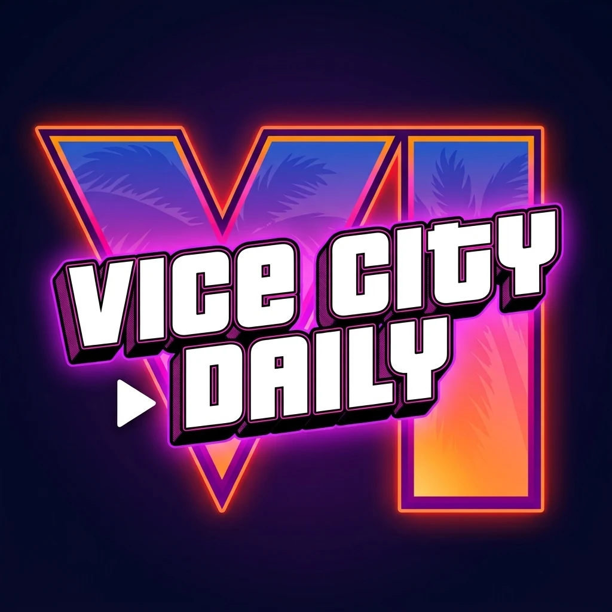

Vice City Daily
The best GTA 6 streamer moments, every day.
Watch on YouTubeThe channel
Vice City Daily posts short clips of the funniest, wildest and most surprising GTA 6 moments from Twitch streamers, always credited to the streamer, plus longer compilations.
ClipForge, our clipping tool
ClipForge is the desktop app the channel owner uses to edit clips and publish them to this channel only. With the owner's Google sign-in it:
- uploads and schedules the channel's own Shorts and videos, and updates their titles;
- deletes or hides the channel's own scheduled uploads when the owner removes a clip;
- reads the channel's own view counts and YouTube Analytics to show what works.
It runs on the owner's computer and is not offered to other people. Read the privacy policy.